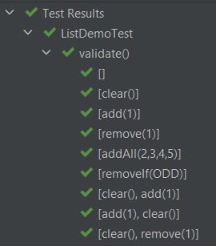
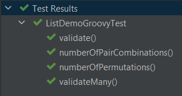
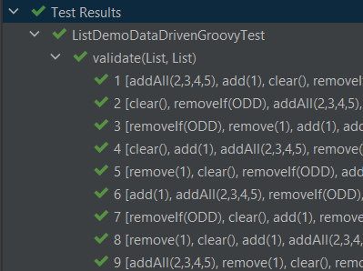
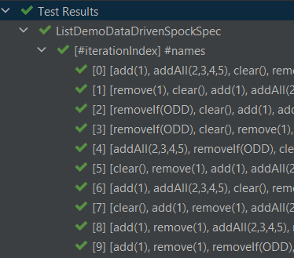

Groovy Testing with Combinations and Permutations
Author: Paul King
Published: 2023-03-19 05:23PM
This post is inspired by the recent foojay.io post Exhaustive JUnit5 Testing with Combinations, Permutations and Products by Per Minborg which looks at how we might do more exhaustive testing with a focus on using the Chronicle Test Framework. Let’s look at using that framework, and others, with Groovy. For fun, we’ll throw in a bit of pairwise testing and property-based testing.
Chronicle Test Framework
The Chronicle Test Framework is a library for use with JUnit which supports easy testing of combinations and permutations of data or actions. It is probably easiest to explain how it might work using an example. The previously mentioned blog has an example showing how to count the permutations:
@Test
void numberOfPermutations() {
assert Combination.of(1, 2, 3, 4, 5, 6)
.flatMap(Permutation::of)
.peek{ println it }
.count() == 1957
}We tweaked it slightly with the peek to print out the permutations.
The output looks like this (with a couple of sections elided for brevity):
[] [1] [2] [3] [4] [5] [6] [1, 2] [2, 1] [1, 3] ... [5, 6] [6, 5] [1, 2, 3] [1, 3, 2] ... [6, 5, 4, 3, 1, 2] [6, 5, 4, 3, 2, 1]
If we have a testing scenario needing lists of numbers, the above generated lists might be perfect, and we don’t need to create 1957 individual manual tests, which would be a laborious and fragile alternative!
We should note that Groovy has some nice combination and permutation capabilities built in. Groovy, doesn’t by default include the empty case in its permutations, but it’s easy enough to add in ourselves. Here is one way to write the above test in Groovy without requiring any additional dependencies:
@Test
void numberOfPermutations() {
var perms = (1..6).subsequences()*.permutations().sum() << []
assert perms.size() == 1957
}We’ll see more examples of the Chronicle Test Framework and Groovy’s in-built capabilities later.
Scenarios for testing
For further background, we encourage you to read the original post. We’ll use the same two scenarios involving testing sequences of operations on lists to ensure that the lists behave in the same way. The two scenarios (though we’ll mainly focus on the first one) are:
-
We’ll compare the
LinkedListandArrayListclasses, performing a series of mutating operations likeclear,addandremoveon both classes and check we get the same result. -
We’ll expand the first scenario to cover a wider range of lists also including
CopyOnWriteArrayList,Stack, andVector.
Scenario 1 with the Chronicle Test Framework
We start by creating a predicate to test for odd numbers, since one of our operations requires it. Then we create a list of the operations we want to perform on our lists.
final Predicate<Integer> ODD = n -> n % 2 == 1
final OPERATIONS = [
NamedConsumer.of(List::clear, "clear()"),
NamedConsumer.of(list -> list.add(1), "add(1)"),
NamedConsumer.of(list -> list.removeElement(1), "remove(1)"),
NamedConsumer.of(list -> list.addAll(Arrays.asList(2, 3, 4, 5)), "addAll(2,3,4,5)"),
NamedConsumer.of(list -> list.removeIf(ODD), "removeIf(ODD)")
]This is very similar to the Java versions shown in the previous blog but
has one minor change. We used Groovy’s removeElement method which is
an alias for remove.
|
Note
|
Java has two overloaded remove methods, one for
removing the first element (if found) from a list, the other removing the
element at a particular index. When dealing with lists of integers, you sometimes (as the original blog shows)
need to use casting to disambiguate between these two variants.
Groovy also works with the same casting trick but also provides removeElement and
remoteAt aliases as an alternative choice to remove the ambiguity. We’ll see
examples of removeAt a little later.
|
Now we can define our test:
@TestFactory
Stream<DynamicTest> validate() {
DynamicTest.stream(Combination.of(OPERATIONS)
.flatMap(Permutation::of),
FormatHelper::toString,
operations -> {
ArrayList first = []
LinkedList second = []
operations.forEach { op ->
op.accept(first)
op.accept(second)
}
assert first == second
})
}This generates test cases for all permutations of our operations. For each test case, we check that once we have applied all operations in the current permutation, that the two lists have the same contents.
If you were wondering why we used NamedConsumer when defining the OPERATIONS earlier,
it is to do with supporting friendly test names when the test is run with various JUnit5-aware test runners.
Here are the first 9 of the 326 tests shown when run in Intellij IDEA:

Scenario 2 with the Chronicle Test Framework
For this scenario, we want to compare results between more list types. Again, we could manually create additional variants of the above tests to cater for the comparison between additional list types, but why not generate those variants without extra manual work.
To do this, we create a list of factories for generating our lists of interest:
final CONSTRUCTORS = [
ArrayList, LinkedList, CopyOnWriteArrayList, Stack, Vector
].collect(clazz -> clazz::new as Supplier)We can now create a test just like the original blog which runs all permutations of the operations on all lists and then checks for each list combination that the resulting lists are equal:
@TestFactory
Stream<DynamicTest> validateMany() {
DynamicTest.stream(Combination.of(OPERATIONS)
.flatMap(Permutation::of),
FormatHelper::toString,
operations -> {
var lists = CONSTRUCTORS.stream()
.map(Supplier::get)
.toList()
operations.forEach(lists::forEach)
Combination.of(lists)
.filter(set -> set.size() == 2)
.map(ArrayList::new)
.forEach { p1, p2 -> assert p1 == p2 }
})
}We can check that our different list combinations are being correctly produced with a test like this:
@Test
void numberOfPairCombinations() {
assert Combination.of(CONSTRUCTORS)
.filter(l -> l.size() == 2)
.peek { println it*.get()*.class*.simpleName }
.count() == 10
}We can see that there are 10 pairs with the following types:
[ArrayList, LinkedList] [ArrayList, CopyOnWriteArrayList] [ArrayList, Stack] [ArrayList, Vector] [LinkedList, CopyOnWriteArrayList] [LinkedList, Stack] [LinkedList, Vector] [CopyOnWriteArrayList, Stack] [CopyOnWriteArrayList, Vector] [Stack, Vector]
At this point, the original blog goes on to warn about the problem of potentially exponentially large numbers of test cases when calculating permutations across many dimensions or cases. We’ll come back to that shortly, but let’s first look at similar tests for these two scenarios using vanilla Groovy.
Scenario 1 with vanilla Groovy and JUnit5
We create our list of operations:
final OPERATIONS = [
List::clear,
{ list -> list.add(1) },
{ list -> list.removeElement(1) },
{ list -> list.addAll(Arrays.asList(2, 3, 4, 5)) },
{ list -> list.removeIf(ODD) }
]Now we use Groovy’s eachPermutation method to go through the different permutations:
@Test
void validate() {
OPERATIONS.eachPermutation { opList ->
ArrayList first = []
LinkedList second = []
opList.each { op ->
op(first)
op(second)
}
assert first == second
}
}Scenario 2 with vanilla Groovy and JUnit5
Using the same definition for OPERATIONS and CONSTRUCTORS as previously,
we can write our test as follows:
@Test
void validateMany() {
OPERATIONS.eachPermutation { opList ->
def pairs = CONSTRUCTORS*.get().subsequences().findAll { it.size() == 2 }
pairs.each { first, second ->
opList.each { op ->
op(first)
op(second)
}
assert first == second
}
}
}We can double-check the list types in a similar way to before:
@Test
void numberOfPairCombinations() {
assert (1..5).subsequences()
.findAll(l -> l.size() == 2)
.size() == 10
}Again, there are 10 pair combinations.
The Groovy versions require no additional dependencies but there is one difference. The pretty formatting of nested results is missing. The JUnit5 run in Intellij will look like the following:

We can’t drill down into the different test subcases within the validate and validateMany tests.
Let’s incorporate that capability with vanilla Groovy and Spock. We’ll just show the approach for
Scenario 1, but the same technique could be used for Scenario 2 if we wanted.
Scenario 1 with Data-driven testing and JUnit5
First, we’ll change our list of operations to a map with the key being the
name we saw earlier when we used NamedConsumer:
final OPERATIONS = [
'clear()' : List::clear,
'add(1)' : { list -> list.add(1) },
'remove(1)' : { list -> list.removeElement(1) },
'addAll(2,3,4,5)': { list -> list.addAll(Arrays.asList(2, 3, 4, 5)) },
'removeIf(ODD)' : { list -> list.removeIf(ODD) }
]Now, we’ll create a helper method to generate our permutations including both the friendly name and the operation:
Stream<Arguments> operationPermutations() {
OPERATIONS.entrySet().permutations().collect(e -> Arguments.of(e.key, e.value)).stream()
}With these in place, we can change the test to use JUnit5’s data-driven
ParameterizedTest capability:
@ParameterizedTest(name = "{index} {0}")
@MethodSource("operationPermutations")
void validate(List<String> names, List<Closure> operations) {
ArrayList first = []
LinkedList second = []
operations.each { op ->
op(first)
op(second)
}
assert first == second
}Which has this output:

Scenario 1 with Spock
We also want to illustrate another useful framework, the Spock testing framework, which also supports Data driven testing.
Spock supports a number of different test styles. Here we are using the given, when, then style with the where clause for data-driven testing:
def "[#iterationIndex] #names"(List<String> names, List<Closure> operations) {
given:
ArrayList first = []
LinkedList second = []
when:
operations.each { op ->
op(first)
op(second)
}
then:
first == second
where:
entries << OPERATIONS.entrySet().permutations()
(names, operations) = entries.collect{ [it.key, it.value] }.transpose()
}When run, it has this output:

Let’s now cover some additional topics.
AllPairs
The "final warning" in the original post was to be wary of the potential explosion in test cases that might come about when using combinations and permutations.
The concept of pairwise testing is a technique designed to help limit this explosion in cases. It relies on the fact that many bugs surface when two features interact badly. If we have a test involving five features, then perhaps we don’t need every combination of all five features. It is perhaps easier to see with an example.
Let’s add a few more operations and then split them into three groups: grow, shrink and read operations.
final GROW_OPS = [
'add(1)': { list -> list.add(1) },
'addAll([2, 3, 4, 5])': { list -> list.addAll([2, 3, 4, 5]) },
'maybe add(1)': { list -> if (new Random().nextBoolean()) list.add(1) },
].entrySet().toList()
final SHRINK_OPS = [
'clear()': List::clear,
'remove(1)': { list -> list.removeElement(1) },
'removeIf(ODD)': { list -> list.removeIf(ODD) }
].entrySet().toList()
final READ_OPS = [
'isEmpty()': List::isEmpty,
'size()': List::size,
'contains(1)': { list -> list.contains(1) },
].entrySet().toList()We want test cases which perform a grow operation, followed by a shrink operation, and then a read operation. If we wanted to cover all possible combinations, we’d need 27 test cases:
assert [ADD_OPS, REMOVE_OPS, READ_OPS].combinations().size() == 27Numerous all-pairs libraries exist for numerous languages. We’ll use the AllPairs4J library for Java.
This library has a builder where we specify the parameters of interest and it then generates the pair-wise combinations. We do a similar test as before for each of the combinations:
@Test
void validate() {
var allPairs = new AllPairs.AllPairsBuilder()
.withTestCombinationSize(2)
.withParameter(new Parameter("Add op", ADD_OPS))
.withParameter(new Parameter("Remove op", REMOVE_OPS))
.withParameter(new Parameter("Read op", READ_OPS))
.build()
allPairs.eachWithIndex { namedOps, index ->
print "$index: "
ArrayList first = []
LinkedList second = []
var log = []
namedOps.each{ k, v ->
log << "$k=$v.key"
var op = v.value
op(first)
op(second)
}
println log.join(', ')
assert first == second
}
}We used withTestCombinationSize(2) to create pair-wise combinations
but the library supports n-wise if we need it. We also used a simple
hand-built log to make it easier to understand what is going on,
but we could have hooked into the data-driven integration points
we saw earlier with JUnit5 and Spock if we wanted.
When we run this test, it has the following output:
1: Add op=add(1), Remove op=clear(), Read op=isEmpty() 2: Add op=maybe add(1), Remove op=remove(1), Read op=isEmpty() 3: Add op=addAll([2, 3, 4, 5]), Remove op=removeIf(ODD), Read op=isEmpty() 4: Add op=addAll([2, 3, 4, 5]), Remove op=remove(1), Read op=size() 5: Add op=maybe add(1), Remove op=clear(), Read op=size() 6: Add op=add(1), Remove op=removeIf(ODD), Read op=size() 7: Add op=add(1), Remove op=remove(1), Read op=contains(1) 8: Add op=maybe add(1), Remove op=removeIf(ODD), Read op=contains(1) 9: Add op=addAll([2, 3, 4, 5]), Remove op=clear(), Read op=contains(1)
You can see that only 9 tests were produced instead of the 27 combinations needed for exhaustive testing. To understand what is going on, we need to examine the output further.
If we look only at the add(1) Add operation,
we’ll see that all three Remove operations,
and all three Read operations are covered in tests:
1: Add op=add(1), Remove op=clear(), Read op=isEmpty() 2: Add op=maybe add(1), Remove op=remove(1), Read op=isEmpty() 3: Add op=addAll([2, 3, 4, 5]), Remove op=removeIf(ODD), Read op=isEmpty() 4: Add op=addAll([2, 3, 4, 5]), Remove op=remove(1), Read op=size() 5: Add op=maybe add(1), Remove op=clear(), Read op=size() 6: Add op=add(1), Remove op=removeIf(ODD), Read op=size() 7: Add op=add(1), Remove op=remove(1), Read op=contains(1) 8: Add op=maybe add(1), Remove op=removeIf(ODD), Read op=contains(1) 9: Add op=addAll([2, 3, 4, 5]), Remove op=clear(), Read op=contains(1)
If we look only at the maybe add(1) Add operation,
we’ll see that all three Remove operations,
and all three Read operations are covered:
1: Add op=add(1), Remove op=clear(), Read op=isEmpty() 2: Add op=maybe add(1), Remove op=remove(1), Read op=isEmpty() 3: Add op=addAll([2, 3, 4, 5]), Remove op=removeIf(ODD), Read op=isEmpty() 4: Add op=addAll([2, 3, 4, 5]), Remove op=remove(1), Read op=size() 5: Add op=maybe add(1), Remove op=clear(), Read op=size() 6: Add op=add(1), Remove op=removeIf(ODD), Read op=size() 7: Add op=add(1), Remove op=remove(1), Read op=contains(1) 8: Add op=maybe add(1), Remove op=removeIf(ODD), Read op=contains(1) 9: Add op=addAll([2, 3, 4, 5]), Remove op=clear(), Read op=contains(1)
If we look only at the addAll([2, 3, 4, 5]) Add operation,
we’ll again see that all three Remove operations,
and all three Read operations are covered:
1: Add op=add(1), Remove op=clear(), Read op=isEmpty() 2: Add op=maybe add(1), Remove op=remove(1), Read op=isEmpty() 3: Add op=addAll([2, 3, 4, 5]), Remove op=removeIf(ODD), Read op=isEmpty() 4: Add op=addAll([2, 3, 4, 5]), Remove op=remove(1), Read op=size() 5: Add op=maybe add(1), Remove op=clear(), Read op=size() 6: Add op=add(1), Remove op=removeIf(ODD), Read op=size() 7: Add op=add(1), Remove op=remove(1), Read op=contains(1) 8: Add op=maybe add(1), Remove op=removeIf(ODD), Read op=contains(1) 9: Add op=addAll([2, 3, 4, 5]), Remove op=clear(), Read op=contains(1)
You might wonder, have we reduced our chances of finding bugs by reducing our number of tests from 27 to 9? If a bug is due to the bad interaction of two features, then no, we still have all the cases covered. That won’t always be true, since obscure bugs might be the result of more than two features interacting. Hence why the library supports n-wise testing. In essence, this technique lets you balance the explosion of combinatorial testing versus the chance of discovering more obscure bugs.
Let’s do a quick cross-check to gain some confidence in our 9 test cases.
First, we’ll tweak the test to capture exceptions and print out our hand-crafted log at that point. This is just one way we could handle such exceptions occurring:
namedOps.each{ k, v ->
try {
log << "$k=$v.key"
var op = v.value
op(first)
op(second)
} catch(ex) {
println 'Failed on last op of: ' + log.join(', ')
throw ex
}
}Now, let’s deliberately introduce a bug. We’ll replace our second shrink operation with one that tries to remove the element at index 0 (assuming there is at least one element):
final SHRINK_OPS = [
'clear()': List::clear,
// 'remove(1)': { list -> list.removeElement(1) }, // (1)
'removeAt(0)': { list -> list.removeAt(0) }, // (2)
'removeIf(ODD)': { list -> list.removeIf(ODD) }
].entrySet().toList()-
Comment out this operation
-
Add in this problematic operation
Now, when we run the test we see:
> Task :test FAILED 0: Grow op=add(1), Shrink op=clear(), Read op=isEmpty() 1: Grow op=addAll([2, 3, 4, 5]), Shrink op=removeAt(0), Read op=isEmpty() 2: Grow op=maybe add(1), Shrink op=removeIf(ODD), Read op=isEmpty() 3: Failed on last op of: Grow op=maybe add(1), Shrink op=removeAt(0)
Here we can see that cases 0, 1 and 2 succeeded. For case 3, the grow operation, which adds an element randomly half the time, must not have added anything, and the subsequent attempt to remove the first element failed. So, even with our small number of test cases, this "bug" was detected.
Jqwik
Our final example looks at property-based testing and the jqwik library.
Property-based testing tools also try to do more testing than what can be easily done (and maintained) with manual tests, but they don’t focus on fully-exhaustive testing per se. Instead, they focus on generating random test inputs and then checking that certain properties hold.
Frameworks which support stateful property-based testing also allow you to generate random commands that we can issue on a stateful system and then check that certain properties hold.
We are going to use jqwik’s stateful testing capabilities in this way.
We start with a similar map of operations (and friendly names) as we’ve seen before:
final OPERATIONS = [
'clear()' : List::clear,
'add(1)' : { list -> list.add(1) },
'remove(1)' : { list -> list.removeElement(1) },
'addAll(2,3,4,5)': { list -> list.addAll(Arrays.asList(2, 3, 4, 5)) },
'removeIf(ODD)' : { list -> list.removeIf(ODD) }
].entrySet().toList()The stateful testing functionality in jqwik has the concept of action chains which describe how stateful objects are transformed. In our case, we randomly select one of our operations, then apply the selected operation to two lists, and check that the lists contain the same values:
class MutateAction implements Action.Independent<Tuple2<List, List>> {
Arbitrary<Transformer<Tuple2<List, List>>> transformer() {
Arbitraries.of(OPERATIONS).map(operation ->
Transformer.mutate(operation.key) { list1, list2 ->
var op = operation.value
op(list1)
op(list2)
assert list1 == list2
})
}
}We now specify that we want up to 6 operations in our action chain, and that we’ll start with an ArrayList and a LinkedList both containing a single element, the Integer 1:
@Provide
Arbitrary<ActionChain> myListActions() {
ActionChain.startWith{ Tuple2.tuple([1] as ArrayList, [1] as LinkedList) }
.withAction(new MutateAction())
.withMaxTransformations(6)
}The @Provide annotation indicates that this method can be used to provide inputs
to tests needing a chain of actions.
Finally, we add our test. For jqwik, this is done using the @Property annotation:
@Property(seed='100001')
void confirmSimilarListBehavior(@ForAll("myListActions") ActionChain chain) {
chain.run()
}The seed annotation attribute is optional and can be used to obtain repeatable tests.
When we run this test, we’ll see that jqwik produced 1000 different sequences of operations and they all passed:
|-----------------------jqwik----------------------- tries = 1000 | # of calls to property checks = 1000 | # of not rejected calls generation = RANDOMIZED | parameters are randomly generated after-failure = SAMPLE_FIRST | try previously failed sample, then previous seed when-fixed-seed = ALLOW | fixing the random seed is allowed edge-cases#mode = MIXIN | edge cases are mixed in edge-cases#total = 0 | # of all combined edge cases edge-cases#tried = 0 | # of edge cases tried in current run seed = 100001 | random seed to reproduce generated values
Like before, we can deliberately break our code to convince ourselves
that our tests are doing their job. Let’s re-introduce the problematic removeAt
operation that we used with all-pairs testing:
final OPERATIONS = [
'clear()' : List::clear,
'add(1)' : { list -> list.add(1) },
// 'remove(1)' : { list -> list.removeElement(1) }, // (1)
'removeAt(0)' : { list -> list.removeAt(0) }, // (2)
'addAll(2,3,4,5)': { list -> list.addAll(Arrays.asList(2, 3, 4, 5)) },
'removeIf(ODD)' : { list -> list.removeIf(ODD) }-
Commented out
-
Added operation which can potentially break
When we re-run our tests we see:
ListDemoDataDrivenJqwikTest:confirmSimilarListBehavior =
org.opentest4j.AssertionFailedError:
Run failed after the following actions: [
clear()
removeAt(0)
]
final state: [[], []]
Index 0 out of bounds for length 0
|-----------------------jqwik-----------------------
tries = 4 | # of calls to property
checks = 4 | # of not rejected calls
generation = RANDOMIZED | parameters are randomly generated
after-failure = SAMPLE_FIRST | try previously failed sample, then previous seed
when-fixed-seed = ALLOW | fixing the random seed is allowed
edge-cases#mode = MIXIN | edge cases are mixed in
edge-cases#total = 0 | # of all combined edge cases
edge-cases#tried = 0 | # of edge cases tried in current run
seed = 100001 | random seed to reproduce generated values
...
Original Error
--------------
org.opentest4j.AssertionFailedError:
Run failed after the following actions: [
addAll(2,3,4,5)
add(1)
clear()
removeAt(0)
]
final state: [[], []]
Index 0 out of bounds for length 0
There are a few pieces to unpack in this output:
-
It produced a "shrunk" sequence exhibiting the error, consisting of the
clear()andremoveAt(0)operations. This is an expected error. -
It ran 3 successful other random sequences before failing during the 4th check.
-
The generated sequence before shrinking was
addAll(2,3,4,5),add(1),clear(), andremoveAt(0).
Usage from Java
You can also use Groovy’s permutation and combination functionality from Java as the following tests show:
@Test // Java
public void combinations() {
String[] letters = {"A", "B"};
Integer[] numbers = {1, 2};
Object[] collections = {letters, numbers};
var expected = List.of(
List.of("A", 1),
List.of("B", 1),
List.of("A", 2),
List.of("B", 2)
);
var combos = GroovyCollections.combinations(collections);
assertEquals(expected, combos);
}
@Test
public void subsequences() {
var numbers = List.of(1, 2, 3);
var expected = Set.of(
List.of(1), List.of(2), List.of(3),
List.of(1, 2), List.of(1, 3), List.of(2, 3),
List.of(1, 2, 3)
);
var result = GroovyCollections.subsequences(numbers);
assertEquals(expected, result);
}
@Test
public void permutations() {
var numbers = List.of(1, 2, 3);
var gen = new PermutationGenerator<>(numbers);
var result = new HashSet<>();
while (gen.hasNext()) {
List<Integer> next = gen.next();
result.add(next);
}
var expected = Set.of(
List.of(1, 2, 3), List.of(1, 3, 2),
List.of(2, 1, 3), List.of(2, 3, 1),
List.of(3, 1, 2), List.of(3, 2, 1)
);
assertEquals(expected, result);
}